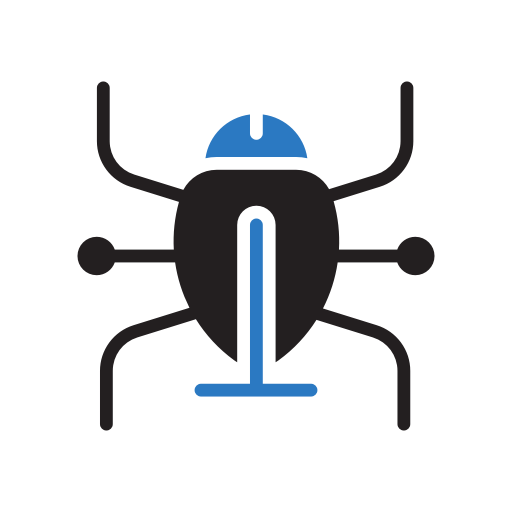

tema1-1HackerEl término "Hacker", alude a la persona capaz de introducirse en
sistemas informáticos ajenos.
CrackerEl término "CRACKER", alude a la persona capaz de introducirse en
sistemas informáticos ajenos con fines delictivos.
Analista de Sistemas Informáticos El analista de sistemas es un profesional especializado del área de
la
informática, encargado del desarrollo de aplicaciones en lo que respecta a su diseño y obtención de los
algoritmos.
Ética de un hackerLa ética hacker es un conjunto de principios morales y filosóficos
surgidos, y aplicados a la comunidad virtual de hackers, aunque no son exclusivas de este ámbito, ya que
muchos de sus valores pueden aplicarse fuera del ámbito de la informática y al acto de hackear.

PhreakersUn "PHREAKER", es un apasionado del sistema telefónico, un
investigador de las telecomunicaciones, su hobby es conocer el funcionamiento de las redes de telefonía.